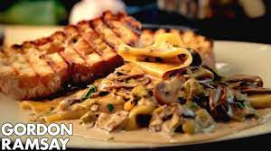

Mushroom and Leek Pasta

Description
If you want to make pasta but with a twist, I suggest you try Gordon Ramsay’s mushroom pasta. In addition to mushrooms, you’ll find leeks and tarragon in the pasta. Also, the twist is that instead of the regular pasta like spaghetti or penne, Gordon Ramsay uses lasagna sheets. Unusual, I know!
Ingredients
- Lasagna Sheets – The lasagna sheets are a different yet great choice for this pasta and go great with creamy sauce.
- Button Mushrooms – The fried mushrooms give the pasta a great earthy and meaty flavor which is quite distinct in every bite.
- Garlic and Leeks – This trio gives the pasta a great texture, aroma, and flavor. The garlic is in charge of the strong aroma. The leeks take charge of the creamy, buttery texture.
- Chicken Stock – Using chicken stock instead of water gives the mushrooms and leeks a better taste.
- Heavy Cream – Heavy cream is the ingredient that makes this pasta the creamy delight it is.
- Olive Oil – Olive oil doesn’t have a strong odor of its own. Hence, it is the perfect oil to cook vegetables.
- Salt and Black Pepper – I cannot stress enough the importance of seasoning in a dish. Season as much you like and enjoy.
- Tarragon – The addition of tarragon gives the pasta a herby touch.
Steps
- Cook The Lasagna Sheets in a large saucepan, add some water and salt and bring it to a boil. Then, add the lasagna to the saucepan and boil it for 4 minutes. After that, drain the water and set the lasagna aside.
- Prepare The Sauce. Heat oil in a large frying pan and add the mushrooms to it. Season with salt and pepper and saute them for some time. Then, add the garlic and leeks to it and cook for about 2-3 minutes. After that, add stock and bring it to a boil. Reduce it to a half and then add heavy cream. Cook it on simmer until it reduces as well.
- Bring The Pasta Together. Once you’ve prepared the sauce, add the cooked lasagna sheets to it. Stir it for some time, then remove the pan from heat. Also, add the chopped tarragon leaves to it and keep it aside.
- Making The Bruschetta. Now, take the bread slices and brush them with olive oil on both sides. Rub halved garlic on the bread slices and then toast them from both sides on a preheated grill pan.
- Serve The Pasta. Spoon the pasta on a serving plate and serve with the garlic bruschetta. Enjoy your delicious meal!